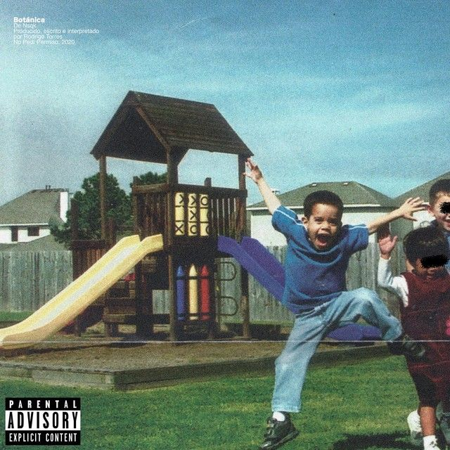
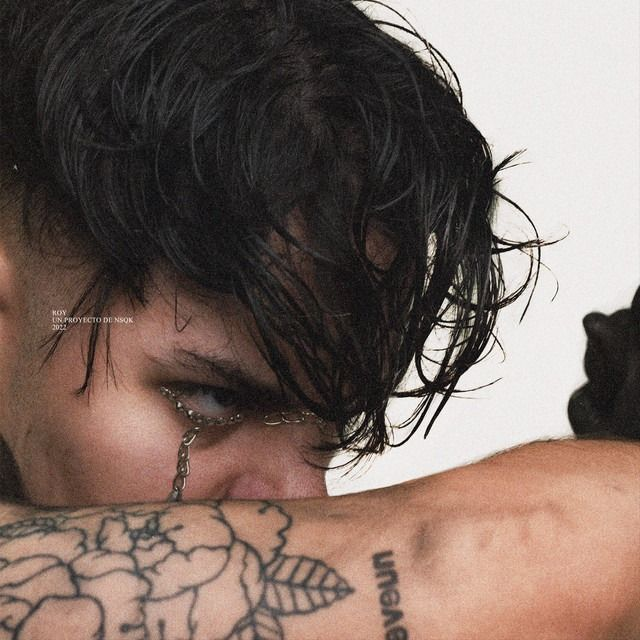
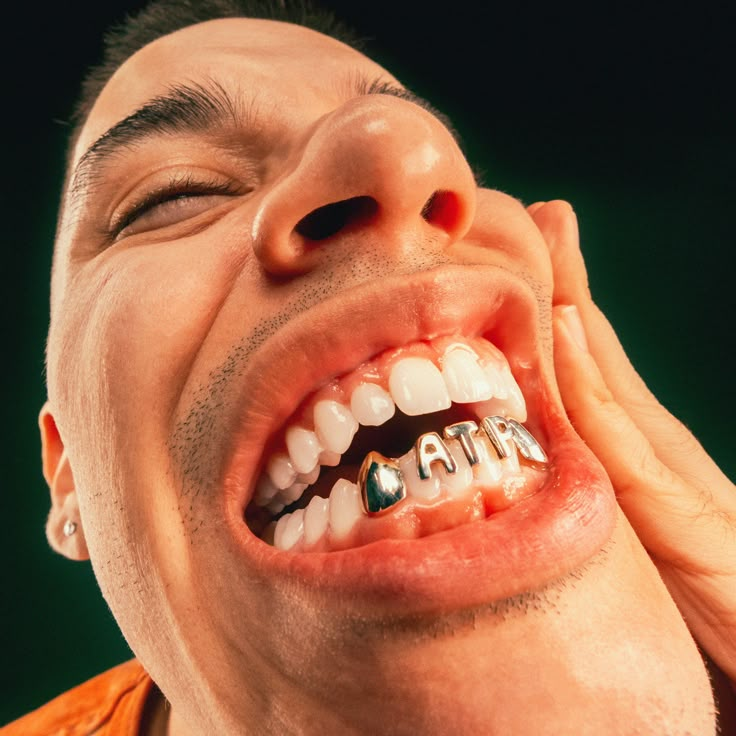
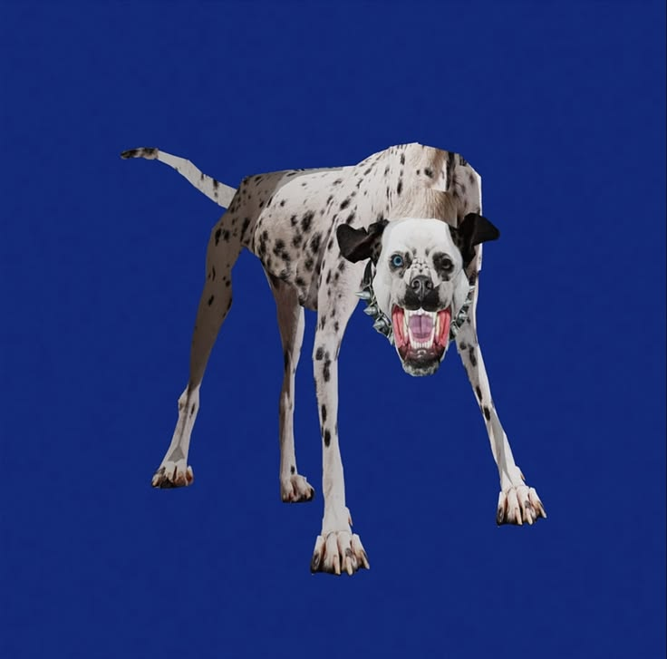

EP
Botánica
31 de enero de 2020
Su debut: mezcla de pop, rap, R&B y electrónica.
Todos sus lanzamientos son con Honey Records

31 de enero de 2020
Su debut: mezcla de pop, rap, R&B y electrónica.

23 de noviembre de 2022
Su primer álbum de estudio, el que lo llevó a Ceremonia y Lollapalooza.

14 de agosto de 2024
Lugar 82 en los mejores álbumes de 2024 de Rolling Stone.

15 de octubre de 2026
17 canciones inspiradas en La metamorfosis de Kafka.